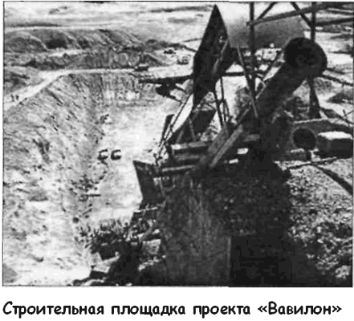

Проект «Вавилон»
Несмотря на закрытие программы «HARP», доктор Джеральд Бюлль не утратил интереса к теме «космических» пушек. Более того, в 1968 году он получил премию Маккарди — самую престижную канадскую награду за исследования, связанные с космосом. В поисках новых инвесторов Бюлль основал собственную «Корпорацию по исследованию космоса». Используя свои связи в Пентагоне, он заключил сделку с Израилем. В 1973 году бюллевская «Корпорация» поставила туда около 50 тысяч артиллерийских снарядов. Тогда же конструктор познакомился с будущим командующим израильской артиллерии генералом Абрахамсом Давидом. Бюлль с восторгом говорил, что генерал — «единственный человек, который аккумулирует все возможности, чтобы построить суперпушку». Наверное, именно потому, что генерал Давид был «единственным» заинтересованным лицом, реализовать свой проект в Израиле Бюллю не удалось.
В середине 70-х доктор Бюлль вступил в контакт с южноафриканским правительством. Его фирма, при негласном попустительстве ЦРУ, поставила Претории 55 тысяч снарядов вместе с документацией по их изготовлению. ЮАР, изолированная ООН от рынков оружия, щедро платила за смертоносный товар. Дела шли неплохо, и конструктор решил расширить свой бизнес. С его помощью в ЮАР стали создаваться самые современные 155-миллиметровые орудия. Но вскоре подробности этой сделки стали достоянием гласности, и в 1980 году Бюлль попал за решетку по обвинению в незаконной продаже военных технологий в страны «третьего мира». «Корпорация по исследованию космоса» была ликвидирована.
После освобождения доктор Бюлль перебрался в Бельгию, где продолжил свою деятельность в качестве эксперта по артиллерии. В марте 1988 года он заключил контракт с правительством Ирака на строительство трех сверхдальнобойных пушек: одного 350-миллиметрового орудия-прототипа (проект «Малый Вавилон») и двух полноразмерных 1000-миллиметровых орудий (проект «Вавилон»).

Если верить расчетам доктора Бюлля, то главные орудия при весе выстрела в 9 тонн могли отправить 600-килограммовый груз на расстояние свыше 1000 километров, а реактивный снаряд весом в 2 тонны с полезной нагрузкой в 200 килограммов — на околоземную орбиту. При этом стоимость вывода на орбиту килограмма полезного груза не должна была превысить 600 долларов.
Проекту присвоили обозначение РС-2, и в официальных бумагах он проходил как проект новейшего нефтехимического комплекса. Сооружением стартовой площадки занималась британская строительная корпорация под руководством Кристофера Коулея.
Длина орудия проекта «Вавилон» достигала 156 метров при весе 1510 тонн. Ствол орудия был сборным и состоял из 26 фрагментов. Сила отдачи при выстреле должна была составить 27000 тонн, что эквивалентно взрыву небольшого ядерного устройства и могло вызвать сейсмическое возмущение во всем мире.
В кругах военных специалистов хорошо известно, что отношение длины ствола к калибру орудия должно находиться в пределах от 40 до 70, у гаубиц — от 20 до 40. Эти значения вытекают из принципа действия орудийного ствола. Первичное ускорение снаряд получает под воздействием ударной волны, образующейся при воспламенении метательного вещества (разгоняющего заряда), а далее на снаряд в стволе давят газы — продукты горения этого вещества. К выходному отверстию их давление постепенно снижается. Поэтому ствол не может быть как угодно длинным — в какой-то момент трение между снарядом и стенками канала станет больше, чем воздействие газов. Существуют также пределы, касающиеся дальности стрельбы и зависимости от мощности разгоняющего заряда. Они связаны с тем, что скорость воспламенения современных метательных веществ значительно ниже скорости распространения ударной волны. Поэтому с увеличением массы заряда, еще до его полного сгорания, снаряд может вылететь из ствола.
С этой точки зрения, пушка «Вавилон» — абсурд и фантазия безумного инженера. Но Джеральд Бюлль нашел решение проблемы в документации на проект сверхдальнобойной пушки «Фау-3»: можно увеличить скорость снаряда в стволе за счет дополнительных, последовательно воспламеняемых зарядов.
Проект «Фау-3» потерпел крах из-за невозможности воспламенять размещенные в канале ствола промежуточные заряды точно в нужный момент. Технических средств, обеспечивающих требуемые миллисекунды, тогда не нашлось. Заряд срабатывал то слишком рано и тормозил снаряд, грозивший разорваться внутри ствола, то с опозданием, не выполняя свои ускоряющие функции. Бюлль решил проблему синхронизации с помощью прецизионных конденсаторов.
Их, кстати, в апреле 1990 года конфисковали в лондонском аэропорту Хитроу и поначалу думали, что они будут применяться в качестве взрывателей для атомных бомб. На самом же деле эти конденсаторы должны были обеспечить точность последовательных воспламенений дополнительных зарядов с погрешностью в пикосекунды! Воспламеняющие устройства срабатывали бы по команде пневматических дат чиков, реагирующих на изменение давления в канале ствола.
В 156-метровом стволе «Большого Вавилона» предполагалось разместить 15 промежуточных зарядов. Они обеспечили бы снаряду, вылетающему из пушки, начальную скорость примерно 2400 м/с. Естественно, дополнительное ускорение тоже имеет свои пределы — Бюлль, похоже, приблизился к ним вплотную. В его конструкции снаряд разгоняется все быстрее и быстрее и в конце концов достигает скорости распространения давления горящей газопороховой смеси промежуточного заряда.
Пушка-прототип «Малый Вавилон» весом 102 тонны была построена к маю 1989 года. Ее огневая позиция размещалась в 145 километрах севернее Багдада, и в ходе испытаний планировалось отправить снаряд на расстояние 750 километров.
Иракский дезертир показал позднее, что пушку собирались использовать для доставки боеголовок с химической или бактериологической начинкой на территорию противника, а также для уничтожения вражеских разведывательных спутников.
Первоначально израильская разведка, работающая в Ираке, не обращала внимания на проект «Вавилон», считая его авантюрой, но когда иракское правительство подключило доктора Булла к разработкам в области создания межконтинентальной многоступенчатой ракеты на основе советских ракет «Скад», конструктору было сделано предупреждение.
Однако Бюлль отказался разорвать контракт с Ираком и 22 марта 1990 года был убит при загадочных обстоятельствах.
Пушки проекта «Вавилон» так и не достроили. Согласно решению Совета Безопасности ООН, принятому после окончания операции «Буря в пустыне», они были уничтожены под контролем международных наблюдателей.